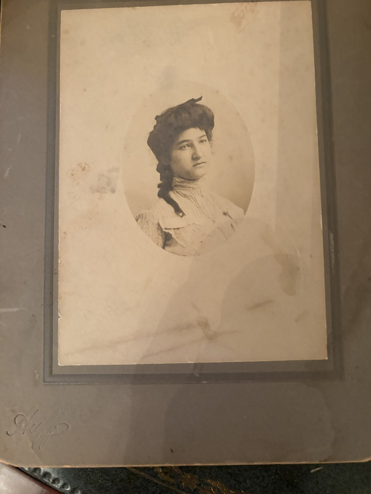
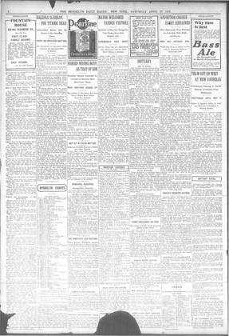
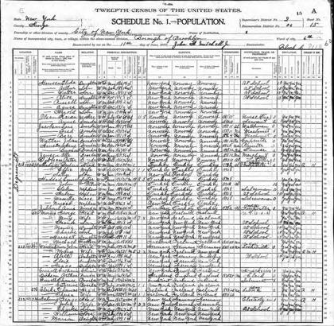
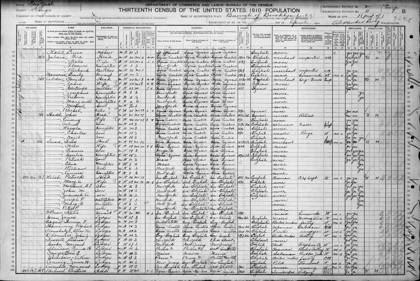
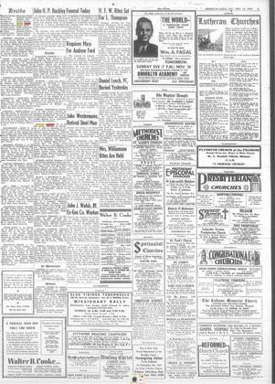
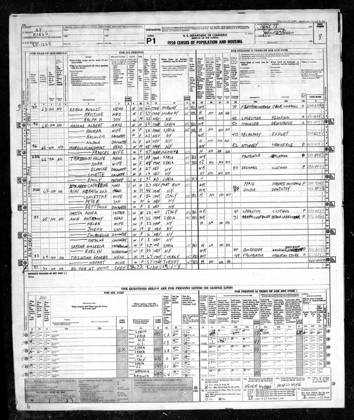
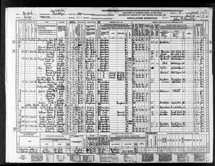

Born in Zahle, she came to Brooklyn as a child and married Antoon in 1912. In 1950 she was living with Anthony and Helen at 95 86th Street.
Wassela as a young woman: a studio print emailed by Jackie, Helen’s daughter, on 14 November 2026, undated. The family says, in Jackie’s words; not a record.

Antoon, Wassela and their three daughters: the whole family photograph, undated. The print carries no names, so we do not say which girl is which. The family says (the names are the family’s labels on the print).
- Born
- Between 1886 and 1893; her records disagree. Zahle, Lebanon, on her marriage certificate
- Came to America
- About 1892 (1900 and 1910 censuses); other records say 1893 to about 1896 (probably)
- Married
- Antoon (Anton) Saydah, 5 May 1912
- Children
- Lily Saydah, Helen Saydah, Evelyn Saydah and Virginia Saydah Hakim
- Died
- Around 6 January 1969 (the Social Security index says December 1968) (probably)
- Parents
- Hanna (John) Hadad and Amina Shehadi
- Brothers
- Salim and Najib (1910 household)
- Another brother
- Charles (probably)
- Sister
- Helen Hadad, who died on 21 April 1908, aged 3 (probably; the parents on her death certificate are John Hadad and Emmenie Shehad) (probably)
Spellings in the records: Wassela, Wassila, Wassilla; Hadad, Hodod (marriage certificate), Hadel (1910 census), Haddad.
Read the full story All the people
Documents about Wassela Hadad Saydah
 Document 55Anton and Wassela's marriage certificate, May 1912 (with their signatures)
Document 55Anton and Wassela's marriage certificate, May 1912 (with their signatures) Document 56Lily Saydah, born and died, March 1913Documents pageAl-Hoda, 1 March 1911, p.3: the engagement announced
Document 56Lily Saydah, born and died, March 1913Documents pageAl-Hoda, 1 March 1911, p.3: the engagement announced Documents page1912 marriage license index line
Documents page1912 marriage license index line
Documents pageBrooklyn Daily Eagle, 27 April 1912, p.2: the marriage license listDocuments pageMira'at al-Gharb, 1 May 1912, p.3: the wedding invitationDocuments pageJurab al-Kurdy, 9 May 1912, p.3: a cousin congratulates Antoon Documents pageCensuses, 1915 to 1940: Antoon and Wassela's householdDocuments pageNewspapers.com obituary index line for Wassela, 1969
Documents pageCensuses, 1915 to 1940: Antoon and Wassela's householdDocuments pageNewspapers.com obituary index line for Wassela, 1969 Documents pageNew Jersey death index line for Wassela, 1969Documents pageWassela's burial and the date she died
Documents pageNew Jersey death index line for Wassela, 1969Documents pageWassela's burial and the date she died
Documents page1900 census, Degraw Street, Brooklyn: the Hadad household
Documents page1910 census, Brooklyn: the Hadad householdDocuments pageMira'at al-Gharb, 15 November 1911, p.3: a choir meets at Hanna al-Haddad's home (Wassela's father) Documents pageJohn (Hanna) Haddad's death notices (October 1913) (Wassela's father)
Documents pageJohn (Hanna) Haddad's death notices (October 1913) (Wassela's father) Documents pageHome Reporter, 17 January 1969: a sympathy note to Wassela's family
Documents pageHome Reporter, 17 January 1969: a sympathy note to Wassela's family
Documents pageAntoon's death in November 1949: the Eagle notices, the death index, the Arabic papers and the funeral reportsDocuments pageFind a Grave: Antoon and Wassela, Green-Wood CemeteryDocuments pageAs-Sameer, 3 January 1941, p.3: "A blessed wedding crown"
Documents pageThe 1950 census: the Awn household at 95 86th Street
Documents pageHelen in the 1940 and 1950 censusesDocuments pageMira'at al-Gharb, 6 October 1941: "A blessed engagement" (Helen's sister)Documents pageAs-Sameer, 2 May 1945, p.5: a shower party for Virginia (Helen's sister)Documents pageMira'at al-Gharb, 11 May 1945, p.4: report of the wedding (Helen's sister)Documents pageSocial Security application index: Evelyn Saydah, Zrake, Deschner (Helen's sister)A plain statement comes from a record we hold. “The family says” means we were told it and have not found a record. “Probably” means it fits the records but is not proven. Living relatives are not listed.